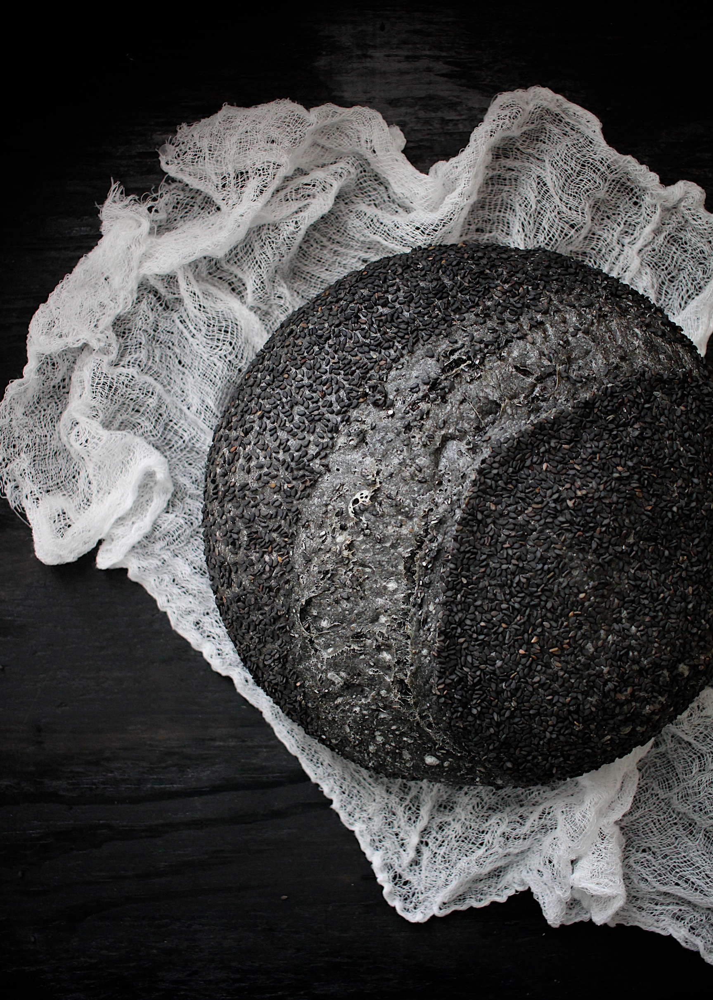

Charcoal Black Sesame Sourdough

Description:
Untested (by me) recipe that I would like to try, it is from Scratch eats
Ingredients:
- 800 grams Room temp Water(around 60-80 Farenheit), unchlorinated
- 200 grams Sourdough Starter
- 20 grams Food Grade Activated Charcoal
- 1000 grams All-Purpose Flour
- 20 grams Unrefined Sea Salt
- 200 grams Black Sesame Seeds, more for coating the loaves
Instructions:
- In a large bowl stir together the water and starter. Add flour and charcoal and mix with a dough whisk or by hand until it's a cohesive mass. Let rest for 40~60 minutes to allow the flour to fully absorb the water. This is called the autolyse phase.
- After autolyse, add the salt and mix thoroughly. The gluten will have developed significantly during autolyse, but this is a fairly wet dough so it shouldn't bee too difficult. You may need to knead more than mix. Once salt is sufficiently mixed in, allow to rest for 15 minutes.
- Using wet hands, pull from under the dough on the right side and fold it over to the left. Repeat on the left (to right), top (to bottom), and bottom (to top). Rest for another 15 minutes. Sprinkle the sesame seeds over the top and repeat the folding. Repeat the folding every 15 minutes for the first 2 hours. After the folds, allow the bread to rise on the counter for another 2~3 hours for a total of 5~6 hours.
- Turn the dough out onto a clean kitchen and slightly damp counter and cut into two equal portions. Take one piece and fold it and turn it seam side down onto the counter. Repeat with the other half and let rest for 10~15 minutes.
- Prepare two clean kitchen towels with a layer of black sesame seeds. Take a ball of dough and lay it on the prepared towel, seam side up. Repeat with second ball of dough. Place the towels in medium bowls or baskets and cover with a plastic bag and place in the fridge overnight or up to 24 hours.
- Preheat the oven to 475°F with a heavy-bottomed, lidded pot inside. Once preheated, place the bread inside the pot, seam side down. Place the lid on the pot and bake for 30 minutes. After 30 minutes, remove the lid and bake for an additional 10~20 minutes until crust is fully formed and you can see slight browning on the edges. Obviously it's harder to see proper browning on black bread, but you'll see it a little.
- Remove the bread from the pot and let cool on a wire rack until completely cool before slicing.